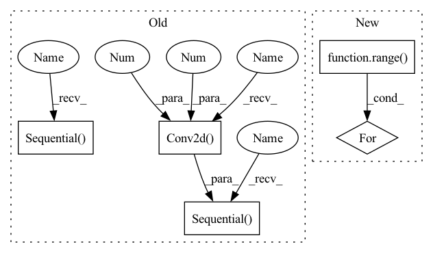

Pattern ID :256
Before Change
nn.Conv2d(64, 128, 5, stride=2, padding=2),
nn.BatchNorm2d(128), nn.LeakyReLU(0.2)))
self.conv_blocks.append(
nn.Sequential(
nn.Conv2d(128, 256, 5, stride=2, padding=2),
nn.BatchNorm2d(256), nn.LeakyReLU(0.2)) )
self.conv_blocks.append(
nn.Sequential(
nn.Conv2d( 256, 512 , 5 , stride=2, padding=2) ,
nn.BatchNorm2d(512), nn.LeakyReLU(0.2)) )
self.decision = nn.Sequential(nn.Linear(7 * 7 * 512, 1), nn.Sigmoid())
def forward(self, x):After Change
// build up downsampling backbone (excluding the output layer)
curr_channels = base_channels
for _ in range( self.num_downsamples):
self.conv_blocks.append(
ConvModule(
curr_channels,
curr_channels * 2,In pattern: SUPERPATTERN
Frequency: 3
Non-data size: 5
Instances Fragment ID: 1118737
Project Name: open-mmlab/mmgeneration
Commit Name: e6233adabc8816f01d309e057be20fae845cdd3c
Time: 2021-04-27
Author: yangyfaker@gmail.com
File Name: mmgen/models/architectures/lsgan/generator_discriminator.py
M Class Name: LSGANDiscriminator
N Class Name: LSGANDiscriminator
M Method Name: __init__(10)
N Method Name: __init__(1)
M Parent Class: nn.Module
N Parent Class: nn.Module
M File Name: mmgen/models/architectures/lsgan/generator_discriminator.py
N File Name: mmgen/models/architectures/lsgan/generator_discriminator.py
M Start Line: 107
M End Line: 125
N Start Line: 220
N End Line: 277
Before Change
super().__init__()
hdim = hidden_dim
self.encoder = nn.Sequential(
nn.Conv2d(3 , hdim, 4 , stride = 2, padding = 1) ,
nn.ReLU(),
nn.Conv2d(hdim, hdim, 4, stride = 2, padding = 1),
nn.ReLU(),
nn.Conv2d(hdim, hdim, 4, stride = 2, padding = 1),
nn.ReLU(),
nn.Conv2d(hdim, num_tokens, 1)
)
self.decoder = nn.Sequential(
nn.ConvTranspose2d(dim, hdim, 4, stride = 2, padding = 1),
nn.ReLU(),
nn.ConvTranspose2d(hdim, hdim, 4, stride = 2, padding = 1),
nn.ReLU(),
nn.ConvTranspose2d(hdim, hdim, 4, stride = 2, padding = 1),
nn.ReLU(),
nn.Conv2d(hdim, 3, 1)
)
self.num_tokens = num_tokens
self.codebook = nn.Embedding(num_tokens, dim)
After Change
encoder_layers = []
decoder_layers = []
for i in range( num_layers):
enc_in = 3 if i == 0 else hdim
dec_in = dim if i == 0 else hdim
encoder_layers += [
nn.Conv2d(enc_in, hdim, 4, stride = 2, padding = 1), Fragment ID: 1118769
Project Name: lucidrains/dalle-pytorch
Commit Name: 95a980129346b66ce7cbb3f984b698ca21e0965c
Time: 2021-01-06
Author: nauman.mustafa.x@gmail.com
File Name: dalle_pytorch/dalle_pytorch.py
M Class Name: DiscreteVAE
N Class Name: DiscreteVAE
M Method Name: __init__(5)
N Method Name: __init__(4)
M Parent Class: nn.Module
N Parent Class: nn.Module
M File Name: dalle_pytorch/dalle_pytorch.py
N File Name: dalle_pytorch/dalle_pytorch.py
M Start Line: 82
M End Line: 102
N Start Line: 80
N End Line: 107
Before Change
nn.Sequential(
nn.Conv2d(3, 64, 5, stride=2, padding=2), nn.LeakyReLU(0.2)))
self.conv_blocks.append(
nn.Sequential(
nn.Conv2d(64, 128, 5, stride=2, padding=2),
nn.BatchNorm2d(128), nn.LeakyReLU(0.2)) )
self.conv_blocks.append(
nn.Sequential(
nn.Conv2d(128, 256, 5, stride=2, padding=2),
nn.BatchNorm2d(256), nn.LeakyReLU(0.2)))
self.conv_blocks.append(
nn.Sequential(
nn.Conv2d( 256, 512 , 5 , stride=2, padding=2) ,
nn.BatchNorm2d(512), nn.LeakyReLU(0.2)) )
self.decision = nn.Sequential(nn.Linear(7 * 7 * 512, 1), nn.Sigmoid())
def forward(self, x):After Change
// build up downsampling backbone (excluding the output layer)
curr_channels = base_channels
for _ in range( self.num_downsamples):
self.conv_blocks.append(
ConvModule(
curr_channels,
curr_channels * 2, Fragment ID: 1118736
Project Name: open-mmlab/mmgeneration
Commit Name: e6233adabc8816f01d309e057be20fae845cdd3c
Time: 2021-04-27
Author: yangyfaker@gmail.com
File Name: mmgen/models/architectures/lsgan/generator_discriminator.py
M Class Name: LSGANDiscriminator
N Class Name: LSGANDiscriminator
M Method Name: __init__(10)
N Method Name: __init__(1)
M Parent Class: nn.Module
N Parent Class: nn.Module
M File Name: mmgen/models/architectures/lsgan/generator_discriminator.py
N File Name: mmgen/models/architectures/lsgan/generator_discriminator.py
M Start Line: 107
M End Line: 125
N Start Line: 220
N End Line: 277
Before Change
self.period = period
self.discriminator = nn.ModuleList([
nn.Sequential(
nn.utils.weight_norm(nn.Conv2d(1 , 64 , kernel_size=(5, 1), stride=(3, 1)) ),
nn.LeakyReLU(0.2, inplace=True),
) ,
nn.Sequential(
nn.utils.weight_norm(nn.Conv2d(64, 128, kernel_size=(5, 1), stride=(3, 1))),
nn.LeakyReLU(0.2, inplace=True),
) ,
nn.Sequential(
nn.utils.weight_norm(nn.Conv2d(128, 256, kernel_size=(5, 1), stride=(3, 1))),
nn.LeakyReLU(0.2, inplace=True),After Change
layer = []
self.period = period
inp = 1
for l in range( 4):
out = int(2 ** (5 + l + 1))
layer += [
nn.utils.weight_norm(nn.Conv2d(inp, out, kernel_size=(5, 1), stride=(3, 1))),
nn.LeakyReLU(0.2) Fragment ID: 1118725
Project Name: coqui-ai/tts
Commit Name: c20a6b118555830d16437d294cc328f7e715fa32
Time: 2021-04-08
Author: rishikksh20@gmail.com
File Name: TTS/vocoder/models/multi_period_discriminator.py
M Class Name: PeriodDiscriminator
N Class Name: PeriodDiscriminator
M Method Name: __init__(2)
N Method Name: __init__(2)
M Parent Class: nn.Module
N Parent Class: nn.Module
M File Name: TTS/vocoder/models/multi_period_discriminator.py
N File Name: TTS/vocoder/models/multi_period_discriminator.py
M Start Line: 11
M End Line: 33
N Start Line: 9
N End Line: 24